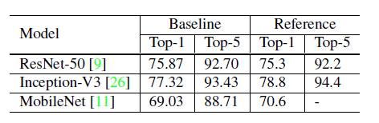
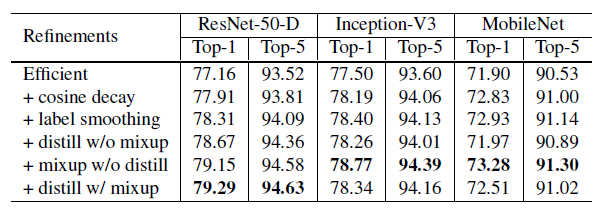

本篇论文是由亚马逊实验室的Tong He, Zhi Zhang, Hang Zhang, Zhongyue Zhang, Junyuan Xie, Mu Li所作的Bag of Tricks for Image Classification with Convolutional Neural Networks, 发表在2019年CVPR上.
收获总结
论文复现对很多人而言难度都比较大，因为常常涉及很多细节，部分细节对于模型效果影响很大，但是却很少有文章介绍这些细节，本篇论文就是专门详细描述各种图像领域调参Trick的文章, 包括各种小Trick的内容并测试它们的效果.
作者首先选用了ResNet50作为基线, 并且使用了数据增强. 具体的做法有
- 每个像素除以255,做归一化
- 随机以[4/3, 3/4]的比例随机裁剪原图
- 以0.5的概率水平翻转
- 以[0.6, 1.4]的系数缩放色调, 饱和度和亮度.
- 以正态分布N(0, 0.1)对图像添加PCA噪声
- 对每一个图像通道进行标准化(减去均值除以方差)
在验证集上, 保持图片的长宽比例不变, 将短边缩放到256像素, 然后随机裁剪$224\times 224$. 模型的参数随机初始化成$[-a, a]$其中
$$a=\sqrt{6/(d_{in}+d_{out})}$$
$d_{in},d_{out}$分别是输入图片的通道数和模型输出的通道数, 所有的bias初始化为0, batch normalization层中$\gamma$初始化为1, $\beta$初始化为0, 模型使用8块V100GPU训练120个epoch,Batch size设置为256, 初始学习率为0.1, 每30个epoch 学习率降低10倍. 使用了这种训练技巧的结果比参考更好.

第二部分: 有效的训练技巧
首先是批训练, 小批量梯度下降法可以并行, 减少运行开销. 而使用大批量会减慢训练进度, 并且对于凸优化来说, 大批量也不利于收敛. 在小批量梯度下降法中, batch size的大小并不影响随机梯度的均值, 但会影响它的方差, batch size越大, 就可以减少造型对模型的影响, 换句话说就可以选择更大的学习率来更新梯度.
除了batch size, 学习率的更新还有一种方法warmup. 在训练刚开始时, 模型并不稳定, 如果选择一个大的学习率会导致模型不稳定, warmup的做法是, 在训练的开始先选一个较小的学习率, 在更新一定次数后, 将学习率调整为较大的学习率,
每个残差块的最后一个BN层的$\gamma$参数初始化为0, 作者认为初始化为0更有利于模型的训练。
不对bias参数执行weight decay操作, weight decay主要的作用就是通过对网络层的参数（包括weight和bias）做约束（L2正则化会使得网络层的参数更加平滑）达到减少模型过拟合的效果。
除此之外, 我们通常使用的是32位精度的浮点运算进行训练, 如果可以换成16位精度的浮点数运算就可以加快训练. 不过作者提出的技巧只有在V100GPU上才能实现.
第三部分中, 作者针对ResNet为了加快模型训练做了一些小改变. 这里就不介绍了.
第四部分, 作者提到了4个调参技巧
- 学习率衰减策略采用cosine函数, 经过实验对比使用cosine学习率衰减比step decay效果更好.
- 采用label smoothing, 这个是针对one-hot编码来做软化, 这样在计算损失值时能够在一定程度上减少过拟合。从交叉熵损失函数可以看出，只有真实标签对应的类别概率才会对损失值计算有所帮助，因此label smoothing相当于减少真实标签的类别概率在计算损失值时的权重，同时增加其他类别的预测概率在最终损失函数中的权重。
- 知识蒸馏（knowledge distillation）, 这部分其实是模型加速压缩领域的一个重要分支，表示用一个效果更好的teacher model训练student model，使得student model在模型结构不改变的情况下提升效果。作者采用ResNet-152作为teacher model，用ResNet-50作为student model，代码上通过在ResNet网络后添加一个蒸馏损失函数实现，这个损失函数用来评价teacher model输出和student model输出的差异，因此整体的损失函数原损失函数和蒸馏损失函数的结合
- mixup, mixup也是一种数据增强方式, 每次读取两张图片, 以一定比例将两幅图像进行混合
最终, 这四种技巧的训练结果如图所示

同时, 作者使用了迁移学习验证了这些技巧在语义分割和目标检测中同样拥有很好的性能.